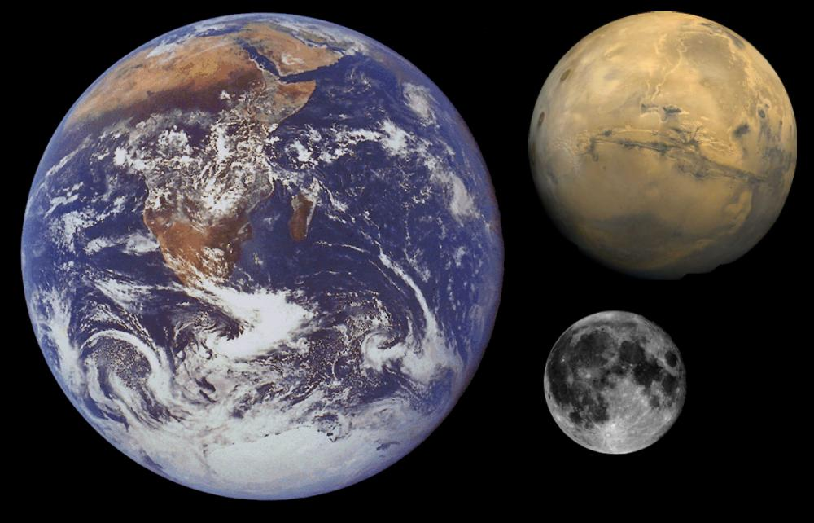
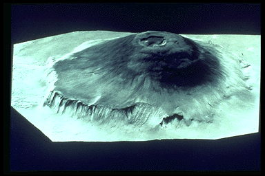
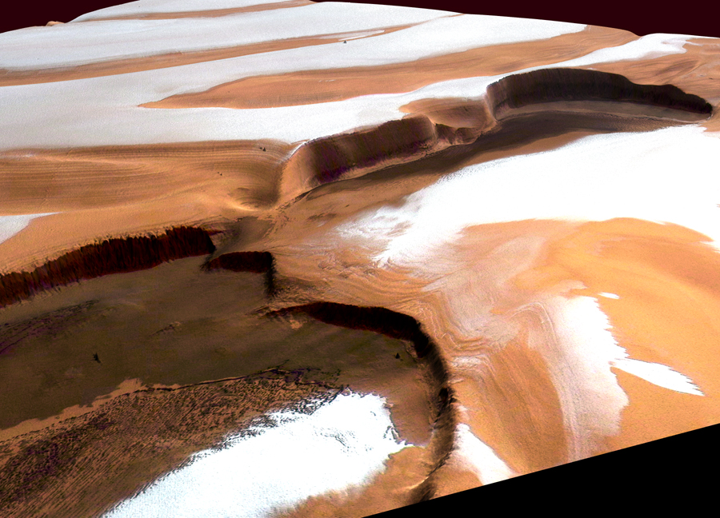
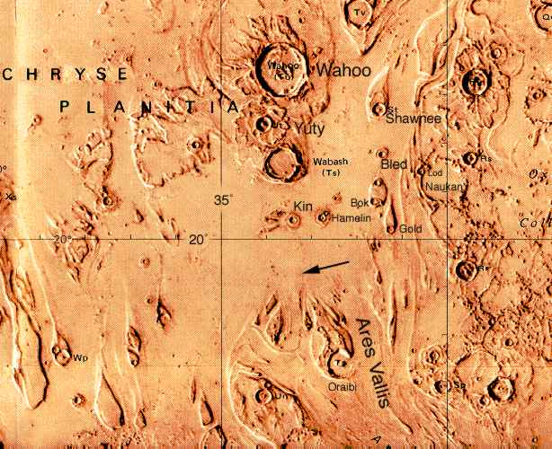

ASTR 1210 (O'CONNELL)
SELECTED MARS IMAGES
Mars features the most interesting surface of any planet other than
Earth. Even though Mars is a smaller planet, its land area is about
the same as Earth's (since two-thirds of Earth's surface is covered by
oceans). Mars' terrain is an exaggerated version of the Earth's. The
spacecraft campaign of orbiters and landers which began in the
mid-1990's has yielded an enormous amount of information on Mars.
You can find a large number of beautiful Mars images taken by
terrestrial telescopes and spacecraft on the Web. Some of the better
sites are linked to the
Study Guide 16 page on Mars.
Here, I've selected images which illustrate the variety of terrain on Mars
and the extent to which we are now able to study it from spacecraft.

Earth, Moon, and Mars Compared to Scale
|
|
|
| THARSIS HEMISPHERE |
HELLAS HEMISPHERE |
MOLA Maps of Mars
Topographic maps produced by the Mars Orbiter Laser Altimeter (MOLA)
on the Mars Global Surveyor (MGS) mission (1998-2006). Left: Tharsis
hemisphere. Right: Hellas hemisphere. Color coding is for altitude
(blue is lowest, red high, white is highest---but doesn't indicate
snow). Click on the images for larger versions. For a high-resolution
enlargement, click
here.
Identifications for the various Martian features visible here are
given
here (main areas),
here (details), or in a
large-format poster
here.
The Tharsis hemisphere is dominated by the
"Tharsis Bulge" a huge, elevated surface
deformation which produced striking volcanoes and canyons. The Hellas
hemisphere consists mainly of cratered highlands, punctuated by a
single enormous impact basin (
Hellas). The cratering density shows
that the Tharsis hemisphere is significantly younger, on average, than
the Hellas hemisphere. Tharsis is probably 2-3 billion years old.
An even more remarkable asymmetry revealed by the MOLA altitude maps is
the large 5 km (16,500 ft) difference between the mean elevations of
the (low) northern hemisphere and the (high) southern hemisphere. The
north is less heavily cratered (meaning younger) and smoother. It is
dominated by a huge, flat depression (blue in the images above), which
may be the bed of an ancient
ocean.
[Images: MOLA Team]
Map of Tharsis
MOLA map of the dramatic Tharsis (left) and Chryse (right) regions on Mars,
color-coded for altitude as above. Click on the map for a high-resolution
image of the area.
Clearly marked are the major Tharsis volcanoes: Olympus Mons (the
isolated peak to the west at coordinates 18N, 228E), Alba Patera (40N,
250E) and the volcanic chain consisting of Ascraeus, Pavonis and Arsia
montes. In the lower center of the map is the gigantic Valles
Marineris canyon system (stretching from 265E to 310E). At the right
side are the Chryse channels, running toward the northern plains. The
large red (high altitude) blotch corresponds to
the
"Tharsis Bulge."
Although the Tharsis Bulge itself is thought to be over 3 billion
years old, volcanic activity in the form of smooth lava flows
continued in some areas there until as recently as 100 million years
ago. There is even improving evidence that some small flows occurred
in the last few million years. Mars may not be quite as dormant
a planet as had been assumed.
[Image: MOLA Team]

Volcano Olympus Mons
Olympus Mons, located west of the Tharsis bulge, is the largest volcano
known in the Solar System, with an altitude of 88,000 feet
(
compare to
Mt. Everest at 29,000 ft above sea level and 43,000 ft above the ocean
floor), a diameter of 340 miles, a
caldera 44
miles in diameter and flanking cliffs reaching 20,000 feet in
altitude. If situated in Virginia, it would occupy most of the land
area of the state. It is a shield volcano, like the large volcanos in
Hawaii. These tend to have relatively quiescent eruptions of fluid
lava, without the explosiveness associated with ash eruptions or more
viscous lava (as in Mt. St. Helens). The massive concentration of
magma which built up Olympus Mons and the Tharsis bulge apparently
originated in an enormous
mantle plume.
This is a composite of Viking images, projected in perspective as if
seen from an altitude of about 30 miles at a distance of about 1500
miles.
Here is a mosaic looking straight down on Olympus Mons.
Caldera of Olympus Mons (Viking)
Volcano Apollinaris Patera
This view of Apollinaris Patera, shows characteristics
of an explosive origin and an effusive origin. Incised valleys in most
of the flanks of Apollinaris Patera indicate ash deposits and an
explosive origin. On the west side (bottom), landslides that have shaped
its surface also indicate ash deposits. Towards the south flank, a
large fan of material flowed out of the volcano. This indicates an
effusive origin. Perhaps during its early development Apollinaris
Patera had an explosive origin with effusive eruptions taking place
later on. [Image & caption by Calvin J. Hamilton.]
Ceraunius Tholus
A Viking vertical view of Ceraunius Tholus, a "small" volcano in the
Tharsis Bulge just north of the chain of three large Tharsis volcanos
described
above. Ceraunius is about
21000 feet high; the caldera at the summit is about 15 miles across.
The true base of the volcano is submerged in the flood of lava which
produced the surrounding Tharsis plain.
Here is a
perspective view, created in software from Mars Express images, from
the top of Ceraunius' caldera.
Gigantic stress fractures caused by
the
upwelling of magma from below
cross this region. Click the image for an enlarged view.
Tharsis Plume Computer Simulation
This image shows a computer simulation of processes
in the interior of Mars that could have produced the Tharsis region.
The color differences are variations in temperature. Hot regions are
red and cold regions are blue and green, with the difference between
the hot and cold regions being as much as 1000 C (1800 F). Because of
thermal expansion, hot rock has a lower density than cold rock. These
differences in density cause the hot material to rise toward the
surface and the cold material to sink into the interior, creating a
large-scale circulation known as mantle convection. This type of
mantle flow produces plate tectonics on Earth.
The hot, rising material tends to push the surface of the planet up,
and the cold, sinking material tends to pull the surface down. These
motions contribute to the overall topography of the planet. This
deformation of the planet's surface is shown in gray along the outer
surface of the planet in this image. The amount of deformation is
highly exaggerated to make it visible here. The actual uplift in
Tharsis is estimated to be about 8 kilometers (5 miles) at its center.
This uplift also stretches the crust, forming features such as grabens
and
Valles Marineris. In addition, the hot,
rising material may melt as it approaches the surface, producing
volcanic activity. [Simulation & caption by Walter
S. Kiefer and Amanda Kubala, LPI.]
Valles Marineris
This great rift canyon on Mars, seen here in a Viking mosaic image, has a
length of 2400 miles (it would reach from Washington, DC to Los
Angeles), a maximum width of 70 miles, and a maximum depth of 22,000
feet. It is vastly
larger than
the US "Grand" Canyon, which would barely qualify as a "side channel"
here. Valles Marineris was not produced by water flow (although many
smaller Martian channels were). Instead, it appears to have formed by
a stretching and tearing of the Martian crust during the
Tharsis plume upwelling event.
Here
is a video animation (9 MB) of a "flyover," based on Mars Odyssey
images, which gives a good sense of the scale and structure of Valles
Marineris.
Ganges Chasma
A collapsed section of the south wall of Valles Marineris. The
transected crater is 10 miles across. The cliff walls are about
20,000 feet high, and the canyon is about 100 km wide. Click on the
image for a wide field view of another set of mega-landslides in the
northern Ophir Chasma canyon of Valles Marineris. [From
Viking images.]
MGS Closeup of Valles Marineris Rim
Closeup of the rim of Valles Marineris showing details of cliff walls,
thousands of feet high. Layering is visible under the rim at the left
hand side. On Earth, such layers can be produced by both sedimentary
and volcanic processes. Both are also possible on Mars. Original
Mars Global Surveyor image has a resolution of 20 feet per pixel.
[Image by Malin Space Science Systems.]
Hellas Impact Basin
A MOLA map of the Hellas impact basin, the largest on Mars. The upper
panel shows a cross section through the basin. It is 1400 miles
across and over 29,000 feet deep from the rim to its lowest point
(enough to accommodate Mt.Everest). It is surrounded by a huge volume
of excavated material, which, distributed evenly, would cover the
continental US to a depth of 2 miles. It is in the same league with,
but slightly smaller than, the
Aitken basin
on the Moon.
Here is a
graphic comparison of the two largest basins on Mars with the US.
Hellas is one of the few major topographic features on Mars that were
readily identified with telescopes on the Earth (see the best
Earth-based map
here.)
[Image by MOLA team]
Views of Mars' Northern Polar Cap
The frame at the left shows Mars' northern polar cap shrinking from
its maximum size in winter to its minimum in summer (images taken from
near-Earth orbit by the Hubble Space Telescope). In winter the cap
is predominantly frozen carbon-dioxide ("dry ice"), whereas the persistent
summer cap consists of water ice. The spiral patterns that emerge in
summer are enlarged in the MGS image at the right, which has been digitally
rendered by R. Kosinski. The patterns are shaped by strong windflows.
The long, dark indentation is Chasma Boreale, a 300-km long canyon
reaching almost through the polar cap.

The Cliffs of Chasma Boreale
A perspective view, constructed from High Resolution Stereo Camera
images (Mars Express orbiter), showing parts of the canyon walls
of Chasma Boreale in summer. The cliffs here are nearly 2-km (6500
ft) high. The layered terrain is evident in the image. Residual
frost is water ice.
Cydonia
A Mars Express view of the strange Cydonia region, on the Martian
northern Acidalia Planitia lowlands. The many sharply defined
elevated regions have evidently been heavily eroded by water flows.
Cydonia elicted great excitement when the Viking spacecraft first
returned a low-quality image that appeared to show a gigantic,
carved
human face in
the region (in the lower right corner of this image). Later,
high resolution imaging showed
that the "face" was a completely natural formation, although some
enthusiasts continue to argue that Cydonia contains artificial
structures. See
Guide 23 for more discussion of the
"face." Click for a full-resolution version of the image.
Kasei Valles Boundary
A high-resolution view from the Mars Express orbiter of the boundary
between the large outflow canyon system Kasei Valles (upper area) and
the Lunae Planum plateau (lower left). Kasei Valles runs northward
from near Valles Marineris and feeds into the the northern
lowlands/ocean basin. North is to the right in the image. The jumbled
terrain was scoured by gigantic water flows in the past, which also
eroded the upper wall of the 22-mile diameter crater at the right of
the image. The volume of water involved was several thousand times the
flow of the Amazon River. Click for a much enlarged image.
Kasei Valles Boundary With Altitude Coding
The same region shown above but with pseudocolor coding for altitude.
The coding is shown in the upper right. Click for a much enlarged
image.
Acidalia Planitia Channels
A high-resolution view from the Mars Express orbiter of a region about
600 miles northeast of the previous image. This shows the channels
feeding into the northern Acidalia Planitia lowlands (below) from the
Tempe Terra plateau (above). Color-coded for altitude; blue indicates
the lowest altitude. Resolution is 15-m per pixel. Note the
older craters that have been filled in/submerged by wind or
water-borne material.
Water on Mars: Sedimentary Layering
This image from MGS shows a part of the floor of the Candor Chasma
canyon, about 0.5 mile wide. It contains a number of layers of
material, each about 30 feet
thick.
Here
and
here
are similar layered regions. On Earth, deposits like this form from
sedimentary deposits at the bottom of a lake. This is strong
circumstantial evidence for water on Mars at an earlier time. If
these are sediments, they might contain fossils of ancient Martian
lifeforms. Similar features might be produced by lava flows or
windblown dust deposits, but their ubiquity on Mars suggests water is
involved. Click for a full-scale version. [Image by Malin Space
Science Systems]
Water on Mars: Ravi Vallis
A Viking mosaic of the Ravi Vallis channel. Unlike
Valles Marineris, this channel was carved by water. The region shown
is about 225 mi long.
Like many other channels that empty into the northern plains of Mars,
Ravi Vallis originates in a region of collapsed and disrupted
("chaotic") terrain within the planet's older, cratered highlands.
Structures in these channels indicate that they were carved by liquid
water moving at high flow rates (up to 1000's of times the outflow of
the Amazon River). The abrupt beginning of the channel, with no
apparent tributaries, suggests that the water was released under great
pressure from beneath a confining layer of frozen ground. As this
water was released and flowed away, the overlying surface collapsed,
producing the disruption and subsidence shown here. Three such regions
of chaotic collapsed material are seen in this image, connected by a
channel whose floor was scoured by the flowing water. The flow in this
channel was from west to east (left to right). This channel ultimately
links up with a system of channels that flowed northward into Chryse
Basin. [Image & caption: LPI]
Water on Mars: Runoff Channels
These networks of smaller tributaries leading to larger channels resemble
those produced by ground water flow (as opposed to rain) on Earth. Click
for enlargement.
[Image by Calvin J. Hamilton.]

Water on Mars: Ares Vallis, The Pathfinder Site
A plain showing prominent scars of catastrophic flooding, probably 1-3
Byr ago. This is an artist's rendering, based on a
Viking orbiter mosaic, with
identifications added for the more prominent features. The arrow shows the
initial landing zone targeted for the Mars Pathfinder in July 1997.
Note the "Wahoo" crater(!) [Painting by NASA. Images from
NSSDC.]
Water on Mars: Frozen Lake in Crater
This image of a crater in near the Martian North Pole was taken
by the High Resolution Stereo Camera on the Mars Express orbiter.
It shows a large lake of water ice. The temperature when the image
was taken was above the sublimation temperature of carbon dioxide
("dry") ice, so the material must be water ice. The lake is about
10 km (33,000 ft) across.
Water on Mars: Hematite "Blueberries"
The Mars Exploration Rover "Opportunity" took this close up of the
surface near its landing site showing thousands of tiny spherules
called "blueberries" because of their blueish tint in false-color
images. They contain hematite, an iron-oxide mineral precipitated
from water. Such "concretions" are also found on Earth.
Water on Mars: Ancient Ocean Beds?
This is a MOLA elevation map of the north polar hemisphere, with the
outline of the US added for scale. It shows a huge depression which
has many characteristics expected for an ancient ocean bed. Its
border is level in elevation, like a coastline; terraces run parallel
to the coastline; its floor is smooth and relatively flat, suggesting
sedimentation; it is "fed" by channels running from south to north.
Its volume is consistent with other estimates of the total volume of
water on Mars. [Image by MOLA Team]
Water on Mars: Distribution of Water Molecules
This is a map of the fractional content of water molecules in the
upper 1-meter or so of the Martian surface. It was obtained by the
Gamma Ray Spectrometer experiment on the orbiting Mars Odyssey
spacecraft. This instrument detects gamma rays emitted by hydrogen
atoms on the surface after they are activated by
penetrating cosmic
rays. Some regions of the surface are quite dry, but most contain
significant water, and both poles are rich in water molecules. The
gamma-ray technique allows other individual elements to be mapped as
well, including silicon, chlorine, and iron. [Image from Mars
Odyssey]
Water on Mars: Ice Under the South Pole
This picture shows a map made with the MARSIS ground-penetrating radar
instrument on the Mars Express orbiter (March 2007). The radar is
reflected from regions up to 13,000 feet below the surface of Mars'
South Pole, and the image shows the thickness of the layers of water
ice. The black circle is an area without data. This is the largest
water reservoir yet detected on Mars. If distributed uniformly over
the Martian surface, it would cover the planet 36 feet deep in liquid
water. But the flood plains seen on the surface suggest that there
was over 10 times as much water originally present on Mars. [Image
from Mars Express]
Water on Mars: Volume
Spectroscopic measurements of molecular hydrogen in the Martian
atmosphere with the FUSE satellite provide an estimate of the total
volume of water once present on Mars: the equivalent of a global
Martian ocean some 4000 feet deep. The image above is an artist's
concept of what Mars might have looked like when all its low-lying
areas were filled with water.
Curiosity on Mars
At the left is a self-portrait of "Curiosity," the rover of
NASA's
Mars Science Lander
mission, at it looked on the surface of Mars in February 2013. It
carries the most sophisticated set of geophysical analysis instruments
ever sent to another planet. In a
complex
landing
sequence Curiosity was placed within 1.5 miles of its intended
landing site in Gale Crater on August 6, 2012. This 96-mile diameter
crater contains a large central mountain (Aeolis Mons or "Mt. Sharp")
composed of sedimentary rock. At right is a telephoto view of Aeolis
Mons taken by Curiosity, showing its layered structure. Curiosity is
exploring the flanks of the mountain. Click on the images for
enlargements. To follow Curiosity's progress, check
the
Curiosity Rover mission site
at JPL.
Last modified
December 2020 by rwo
Original text copyright © 1998-2020 Robert W. O'Connell.
All rights reserved. These notes are intended for the private,
noncommercial use of students enrolled in Astronomy 1210 at the
University of Virginia.
{kind=link}
{kind=link}
{kind=link}
{kind=link}
{kind=link}
{kind=link}
{kind=link}
{kind=link}
{kind=link}
{kind=link}
{kind=link}
{kind=link}
{kind=link}
{kind=link}
{kind=link}
{kind=link}
{kind=link}
{kind=link}
{kind=link}
{kind=link}
{kind=link}
{kind=link}
{kind=link}
{kind=link}
{kind=link}
{kind=link}
{kind=link}
{kind=link}
{kind=link}
{kind=link}
{kind=link}
{kind=link}
{kind=link}
{kind=link}
{kind=link}
{kind=link}
{kind=link}
{kind=link}
{kind=link}
 Return to Study Guide 16
Return to Study Guide 16
 Guide Index
Guide Index